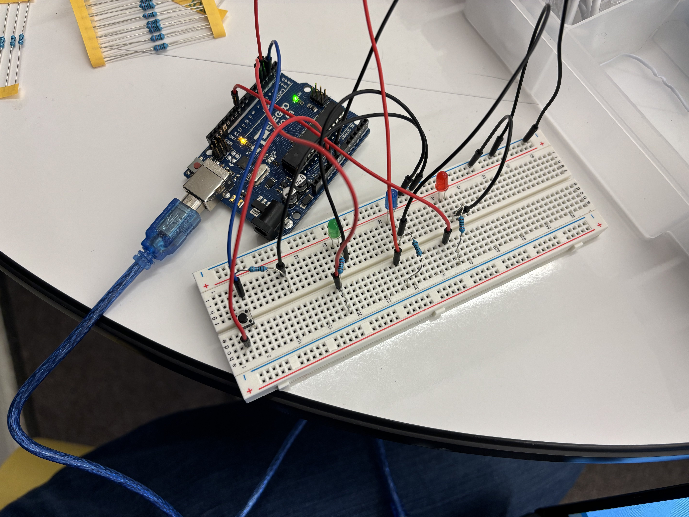

Here is all the documentation Blink! I was assigned to build and code an Arduino circuit that would cause multiple LEDs to light up when a button is pressed, with at least one of the LEDs behavior being fading on and off.
Here is all the documentation Blink! I was assigned to build and code an Arduino circuit that would cause multiple LEDs to light up when a button is pressed, with at least one of the LEDs behavior being fading on and off.
This is the schemattic for the circuit. Pin 2 is set to INPUT and pins 3, 4, and 10 are set to output. When the button is closed current flows from power towrds pin 2 and ground, since the current has to either pass through a 10k ohm resisitoror go towrds pin 2, almost all of the curretns flows towrds pin 2 since there is way less resistance. For the 3 LEDs, pins 3, 4, and 10 all emit 5 volts so an appropiate resistor is used to limit the current to at or below 20 mA. The red and green LEDs have a voltage drop of 1.8 so a 220 ohm resisitor is used. The blue LED has a drop of 3.2, so a 100 ohm resistor is used. Ohms law was used to calculate these values. Below is an image of the circuit.
The button part of circuit receives voltage from power on the Arduino board. A blue wire branches off after the button into pin 2, and a black wire goes to ground placed after a resistor. For the three LEDs, they are all connected to either pin 3, 4, or 10 by a red wire. They are in line with either a 220 ohm or 100 ohm resistor (depending on the voltage drop of the LED) to reduce the current. All three LEDs are then connected to the blue grounding bar on the breadboard by black wires, which is connected to the ground on the Arduino board.
void setup() {
// put your setup code here, to run once:
pinMode(2, INPUT); // Activates pin 2 to detect input Voltage
pinMode(3, OUTPUT); // Activates pin 3 to output Voltage
pinMode(4, OUTPUT); // Activates pin 4 to output Voltage
pinMode(10, OUTPUT); // Activates pin 10 to output Voltage
}
void loop() {
// put your main code here, to run repeatedly:
while (digitalRead(2) == HIGH) { // Checks if the button is pressed
for (int i = 0; i <= 255; i++) { // Increases value of analogWrite by 1 per iteration to have it slowly change brightness
analogWrite(3, i); // Sets value for pin 3 to i
analogWrite(10, (255 - i)); // Set value for pin 10, value the inverse of pin 3
if (i % 50 == 0) { // Checks if i is currently a mutiple of 50, the number determines how fast the light blinks, lower is faster
if ((i / 50) % 2 == 1) { // Checks if i is a negative multiple
digitalWrite(4, HIGH); // Sets pin 4's output to high
}
else if ((i / 50) % 2 == 0) { // Checks if i is a positive multiple
digitalWrite(4, LOW); // Sets pin 4's ooutput to low
}
}
delay(10); // Waits 10 milliseconds
}
for (int i = 255; i >= 0; i--) { // Iterates i down from 255 by 1 per iteration
analogWrite(3, i); // Sets value for pin 3 to i
analogWrite(10, (255 - i)); // Set value for pin 10, value the inverse of pin 3
if (i % 50 == 0) { // Checks if i is currently a mutiple of 50, the number determines how fast the light blinks, lower is faster
if ((i / 50) % 2 == 1) { // Checks if i is a negative multiple
digitalWrite(4, HIGH); // Sets pin 4's output to high
}
else if ((i / 50) % 2 == 0) { // Checks if i is a positive multiple
digitalWrite(4, LOW); // Sets pin 4's ooutput to low
}
}
delay(10); // Waits 10 milliseconds
}
}
analogWrite(3, 0); // Turns off pin 3 once button is released
digitalWrite(4, LOW); // Turns off pin 4 once button is released
analogWrite(10, 0); // Turns off pin 10 once button is released
}
Assuming only the LEDs are drawing current, a 1200 mAh battery could power my circuit for about 25.5 hours. This is because the red and green LEDs drain 14.5 mA each (3.2/220), and the blue LED drains 18 mA (1.8/100). This means the circuit in total drains 47 mA. A 1200 mAh battery can supply 1200 mA for one hour, so it can supply 47 mA for at least 25.5 hours (1200/47).